Prova gratuita
0 € la prima gara
Per capire se RaceReady fa per te, su una gara vera.
Supporto alla scelta e organizzazione della gara.
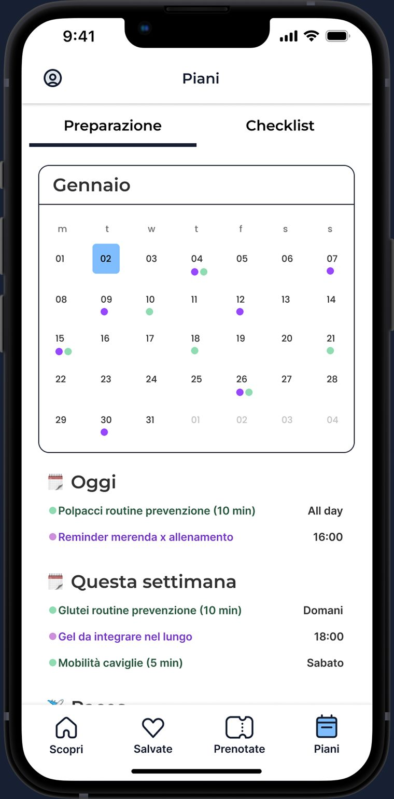
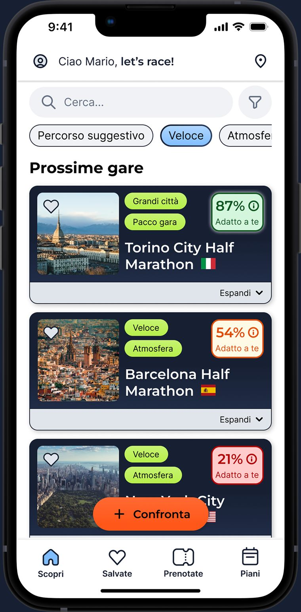
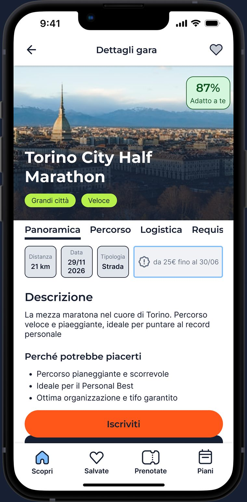
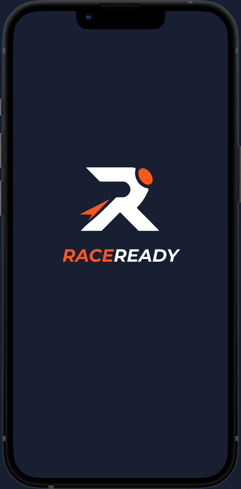
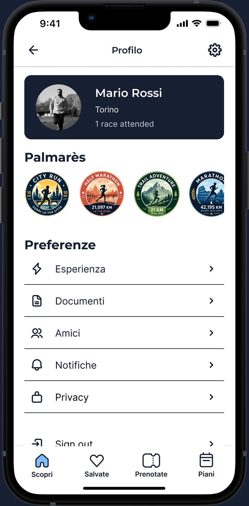
La ricerca ha combinato interviste qualitative e questionario per capire abitudini, difficoltà e bisogni dei runner amatoriali.
Insight ricorrenti I runner cercano chiarezza nella scelta delle gare, nei requisiti di iscrizione, nella logistica e nella preparazione pratica. E spesso si affidano ad amici, run club o fonti online.
Di app per allenarsi ce ne sono tante. Mancava quella che aiuta a scegliere e a organizzarsi.
«Voglio migliorare la mia performance.»
«Voglio fare una gara, ma non so quale scegliere, cosa serve e come organizzarmi.»
Un onboarding breve e mirato per capire chi è il runner e cosa cerca in una gara.
Raccoglie Livello e frequenza di corsa, distanza massima, esperienze passate, obiettivi e preferenze.
Serve a Proporre le gare consigliate, ridurre la confusione iniziale e generare un match score coerente con il profilo.
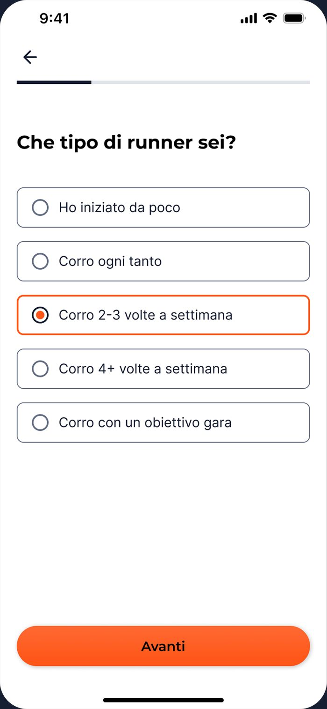
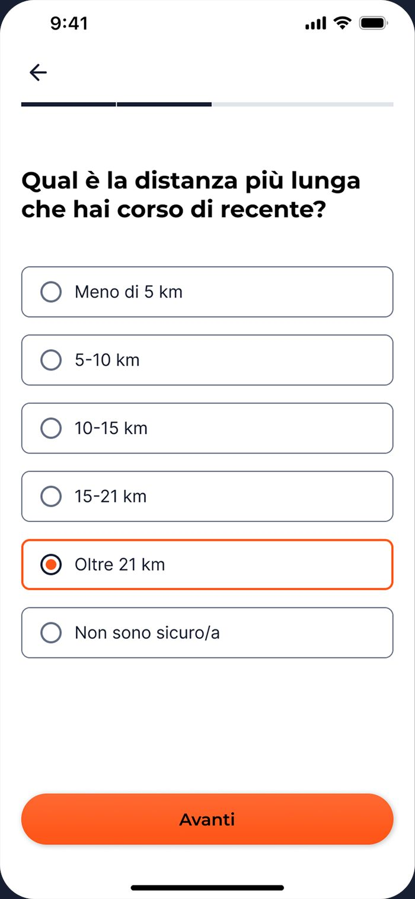
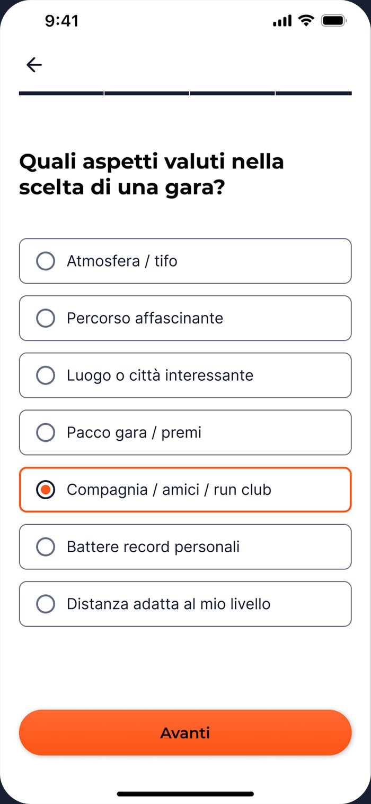
Non solo una lista di eventi, ma uno strumento per scegliere con più sicurezza.
Match score Una valutazione rispetto al profilo dell'utente, classificata in modo semplice su tre livelli.
La gara è adatta al tuo profilo: hai già corso distanze vicine.
La gara è sfidante, ma organizzabile con la giusta preparazione.
La distanza è ancora lontana: meglio puntare prima a una gara più corta.
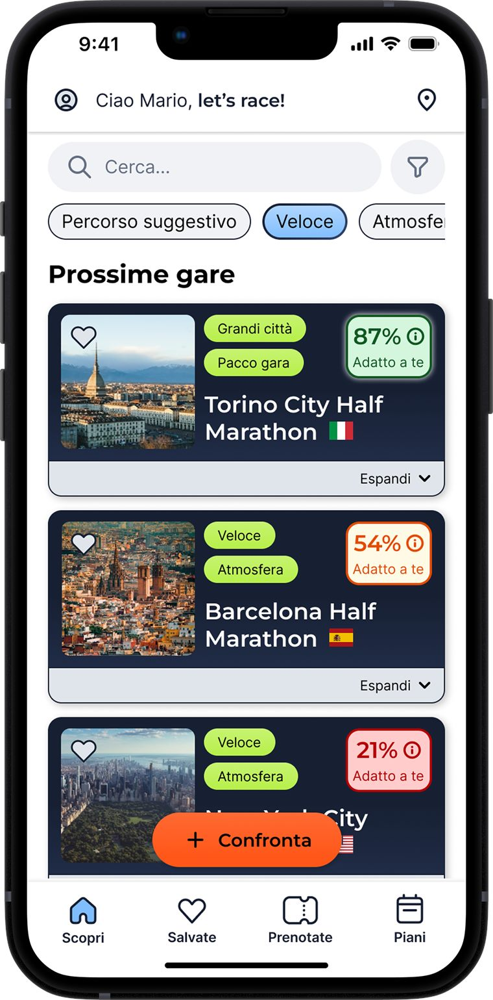
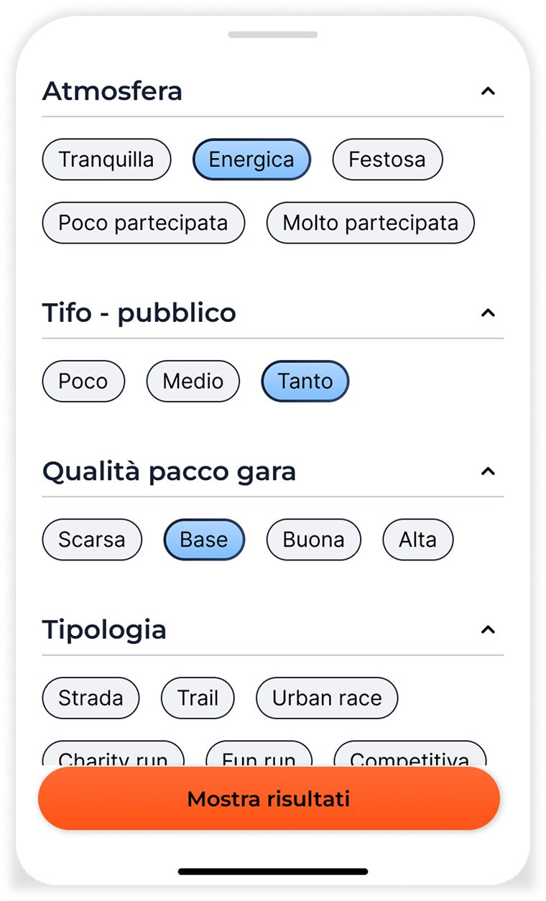
Filtri Distanza, luogo, periodo, prezzo, tipologia, requisiti, atmosfera, tifo, qualità del pacco gara.
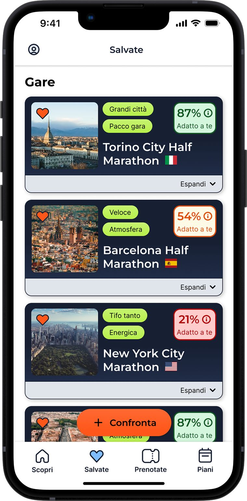
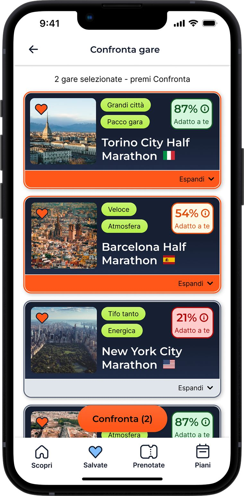
Più gare interessanti, messe a confronto subito. Senza aprire siti diversi o ricordare informazioni sparse.
| Gara | Match | Distanza | Tipologia |
|---|---|---|---|
| Torino City Half Marathon | 87% | 21 km | Strada |
| Barcelona Half Marathon | 54% | 21 km | Strada |
Ogni gara diventa una scheda standard, con le informazioni sempre nello stesso ordine.
Panoramica, community, percorso, logistica, requisiti.
Il profilo raccoglie tutto ciò che serve per gestire la propria esperienza da runner.
Palmarès Le gare completate, i risultati, i badge e i traguardi raggiunti nel tempo.
Documenti Il caricamento e la gestione dei documenti per l'iscrizione, come certificato medico e RunCard. Il certificato si scansiona direttamente con la fotocamera.
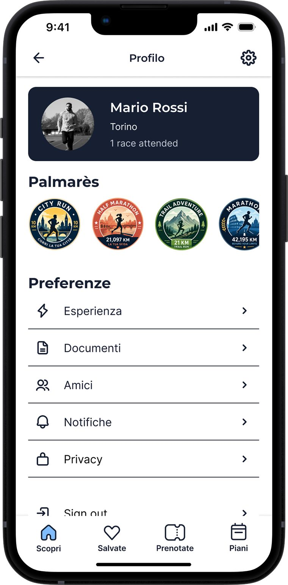
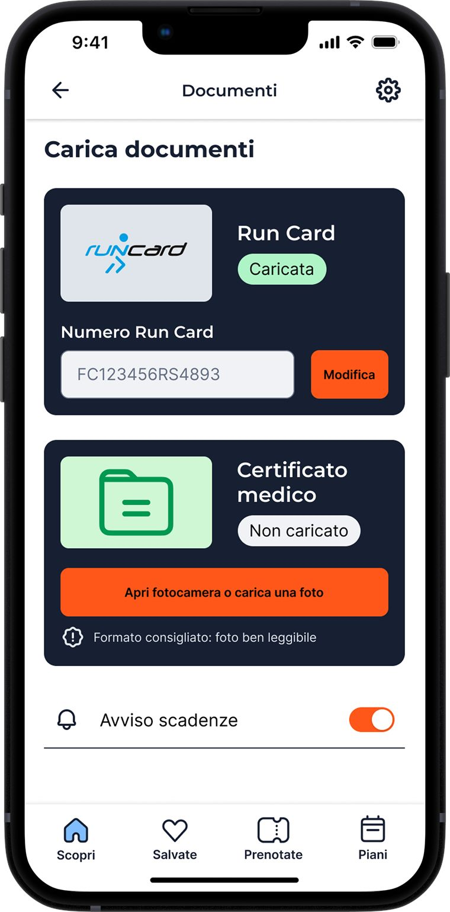
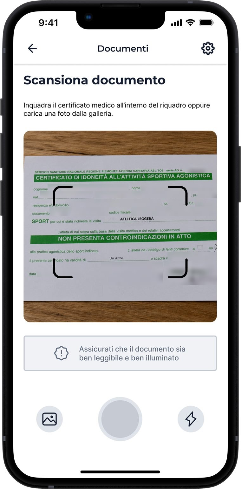
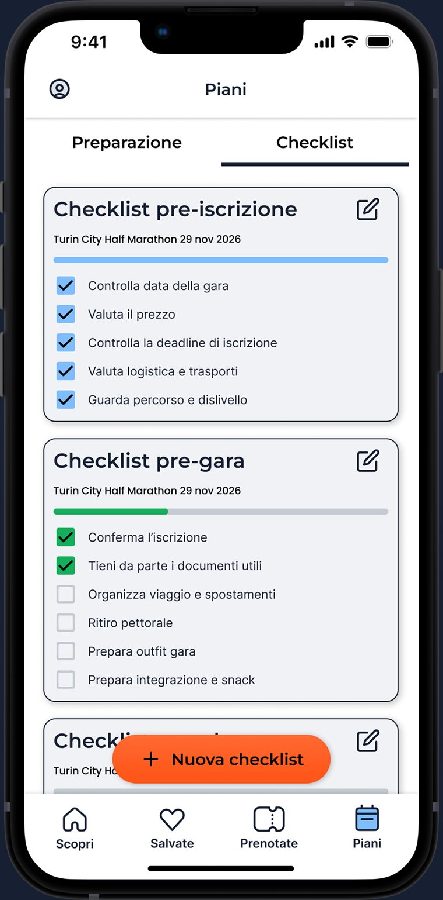
Preparazione Un calendario con reminder sulla nutrizione e consigli di routine di prevenzione.
Checklist Personalizzate per pre-iscrizione, pre-gara e race day. Il giorno della gara non devi cercare nulla.
Dopo la prova gratuita sulla prima gara, si sbloccano gli strumenti avanzati per organizzarsi meglio.
0 € la prima gara
Per capire se RaceReady fa per te, su una gara vera.
2,99 € /mese
Perfetto per preparare una gara.
19,99 € /anno
1,67 € al mese: risparmi rispetto al mensile.
Non ti allena per la gara. Ti aiuta ad arrivarci pronto.
Prova il prototipoInquadra il QR con il telefono.